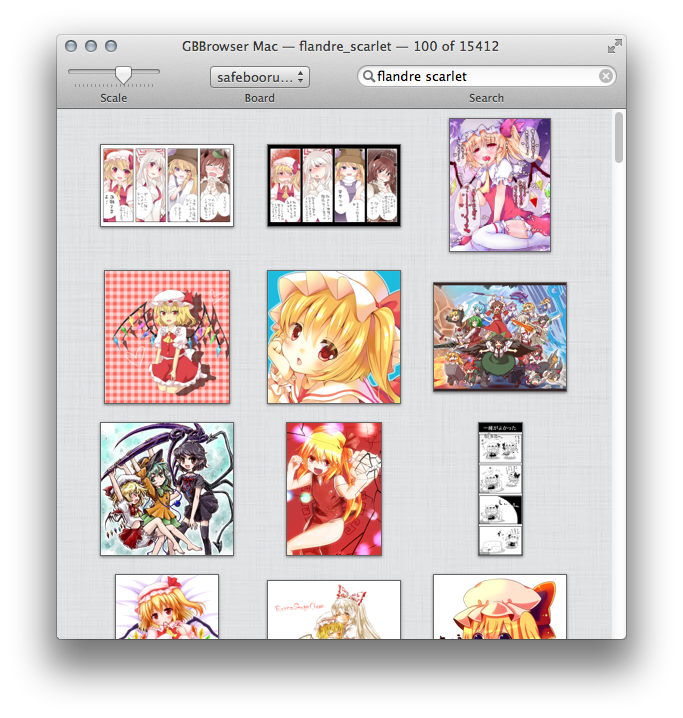
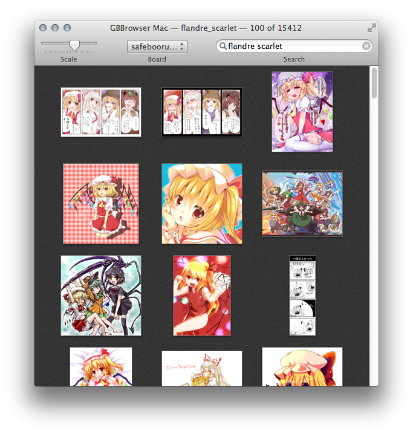
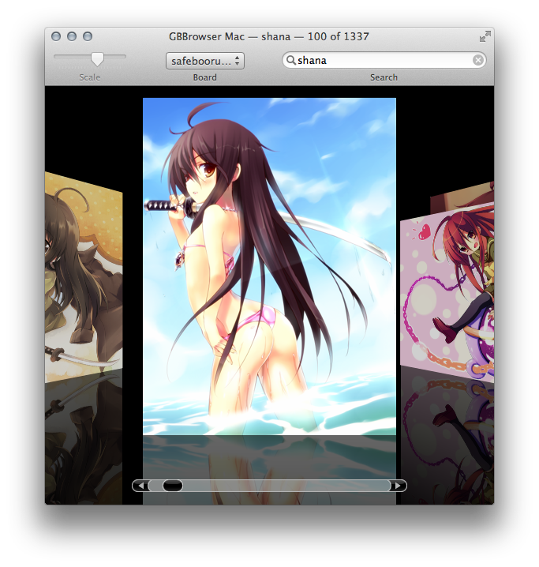
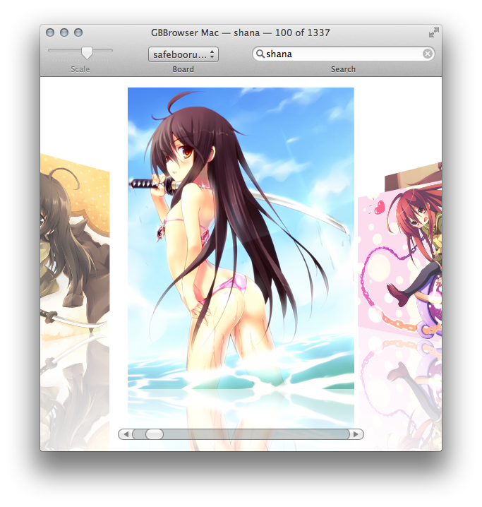
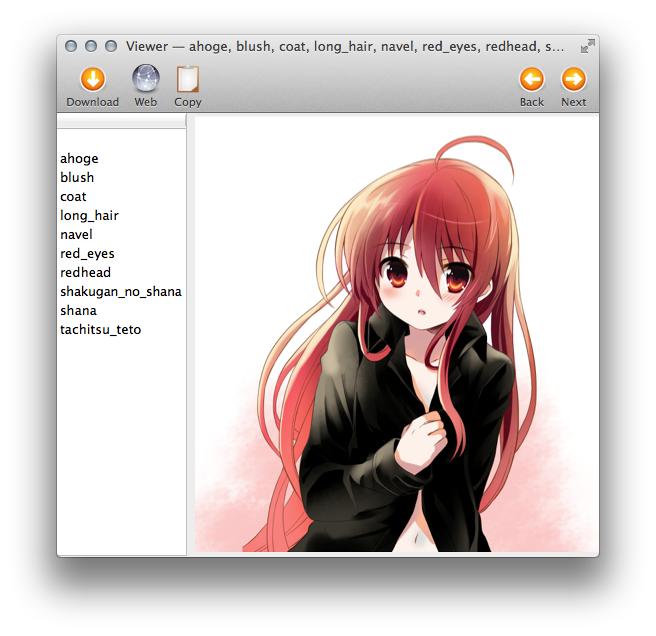
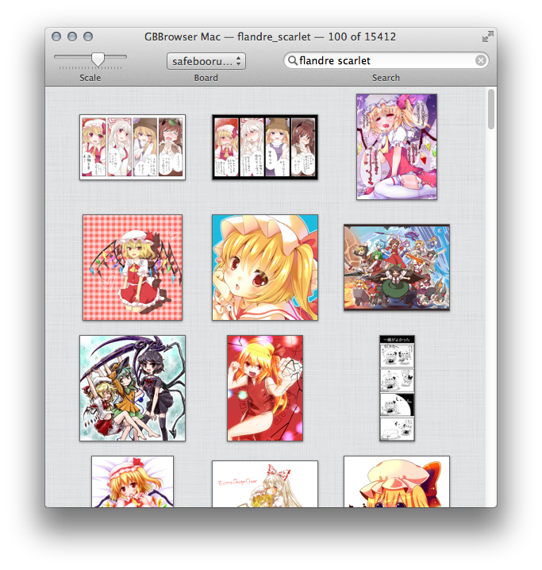
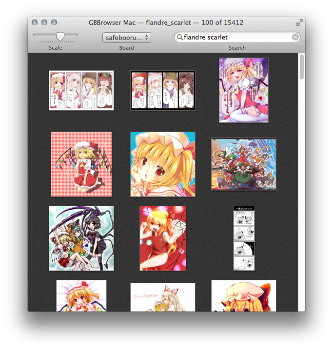
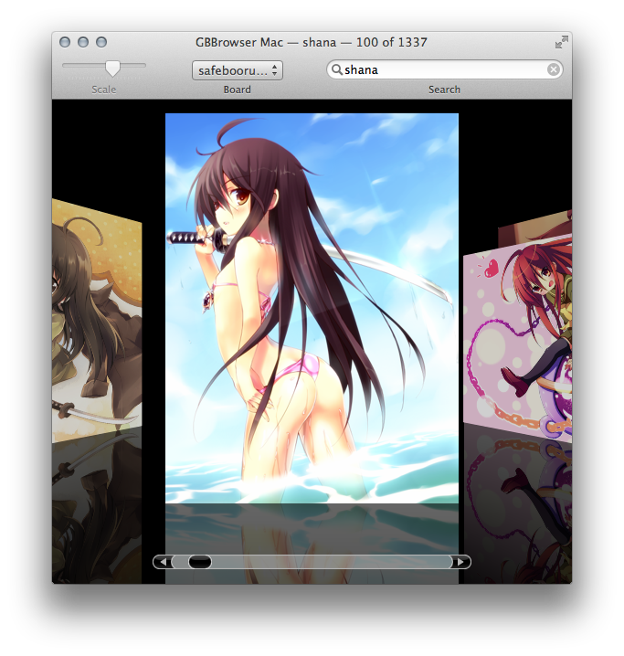
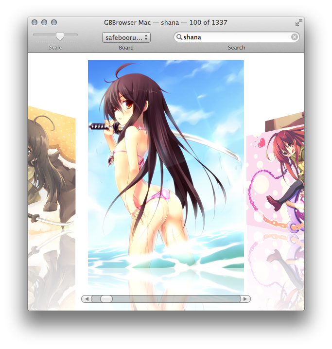
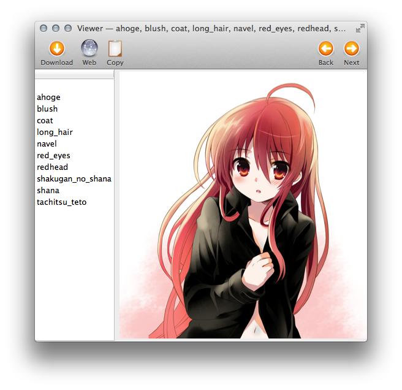

GelbooruViewer
18/01/13 18:17
Same as GBBrowser, but for Mac!
Source
Download 1.2 Now with CoverFlow and two colors!
Screenshots under the break



Source
Download 1.2 Now with CoverFlow and two colors!
Screenshots under the break


